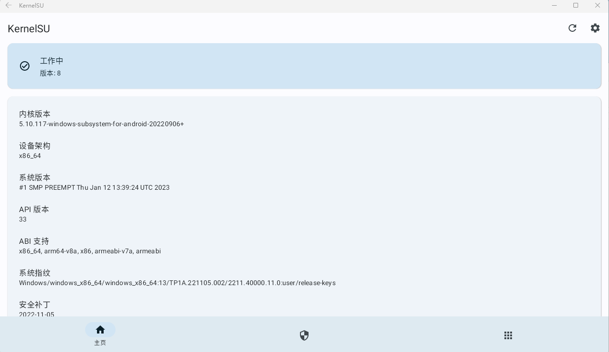

成功在 WSA 上安装 KernelSU
•KernelSU 是什么？
•请查看 kernelsu.org
• 相比和 Magisk 怎么样？
• KernelSU 运行在内核空间，更不容易被检测。
• 还有我是 weishu 的粉丝😀
• 安装步骤
1、前往 github 下载 CI 编译的 Kernel（！选择 wsa 版）
链接：https://github.com/tiann/KernelSU/actions
2、解压 压缩包，将 bzImage 重名为 kernel，放入 wsa安装目录 Tools/ 下。
3、安装 KernelSU Manager
4、安装成功
效果图：

目前 KernelSU 已初步拥有模块功能
KernelSU 可以和 Magisk 共存。
本博客所有文章除特别声明外，均采用 CC BY-NC-SA 4.0 许可协议。转载请注明来自 Fhxzh's blog！